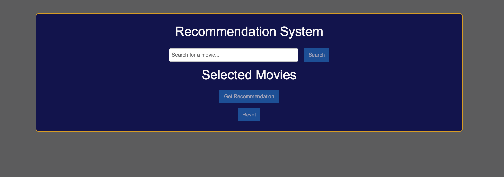
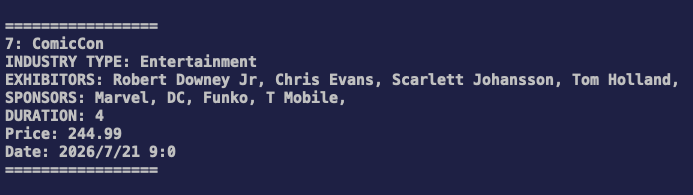
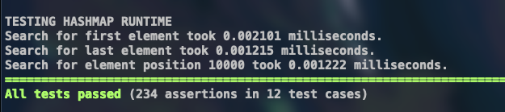

I’m Nick Swisher, a software engineer building and deploying full-stack applications with React, TypeScript, and FastAPI. I focus on clean APIs, clear data flow, and reliable code.
I’ve built modular C++ applications using object-oriented design patterns, and developed data-driven Python services with FastAPI, SQLite, and scikit-learn. I enjoy designing clear interfaces between systems, working across the frontend–backend boundary, and writing code that’s easy to reason about and maintain.
I’m looking to contribute to teams building reliable software products, whether through full-stack development, backend services, or API-driven applications.
B.S. in Applied Computer Science
Graduated: December 2025
GPA: 3.74
B.S. in Kinesiology
Graduated: May 2020
GPA: 3.6

Full-stack recommendation app deployed on Render. Preprocesses metadata, stores it in SQLite, and generates content-based recommendations using TF-IDF and cosine similarity. FastAPI exposes search and recommendation endpoints consumed by a React + TypeScript frontend.

Modular C++ backend simulation modeling users, events, and transactions, built to demonstrate object-oriented design and common patterns such as Factory and Singleton.

C++ project implementing templated HashMap, BST, and Linear List structures with Catch2 unit tests and runtime benchmarking to compare algorithmic tradeoffs.
Email: swisher.n.r@gmail.com
Message me on LinkedIn: LinkedIn